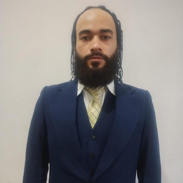

Fabio Ricardo Da Silva Muniz | WDD 130

Olá! Meu nome é Fabio Ricardo e sou de Aparecida de Goiania, Brasil. Eu gosto de andar de skate e jogar rpg, estou estudando desenvolvimento de softwares pela BYU e estou aprendendo muito...

Olá! Meu nome é Fabio Ricardo e sou de Aparecida de Goiania, Brasil. Eu gosto de andar de skate e jogar rpg, estou estudando desenvolvimento de softwares pela BYU e estou aprendendo muito...